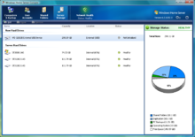

Microsoft Windows,是美国微软公司研发的一套操作系统，它问世于1985年，起初仅仅是Microsoft-DOS模拟环境，后续的系统版本由于微软不断的更新升级，不但易用，也慢慢的成为家家户户人们最喜爱的操作系统。
Windows采用了图形化模式GUI，比起从前的DOS需要键入指令使用的方式更为人性化。随着电脑硬件和软件的不断升级，微软的Windows也在不断升级，从架构的16位、32位再到64位， 系统版本从最初的Windows 1.0 到大家熟知的Windows 95、Windows 98、Windows ME、Windows 2000、Windows 2003、Windows XP、Windows Vista、Windows 7、Windows 8、Windows 8.1、Windows 10 和 Windows Server服务器企业级操作系统，不断持续更新，微软一直在致力于Windows操作系统的开发和完善。

- 中文名
- 视窗操作系统
- 外文名
- Windows
- 创始年
- 1985年
- 创始人
- 比尔·盖茨 保罗·艾伦
- 开发者
- 微软公司
- 发行者
- 微软公司
- 最早版本
- Windows 1.0
- 最新版本
- Windows 10
目录
- 1 版本历史
- 2 早期系列
- ▪ Windows 1.0
- ▪ Windows 2.0
- ▪ Windows 3.0
- ▪ Windows 98
- ▪ Windows 98 SE
- ▪ Windows Me
- 4 Windows NT
- ▪ 早期系列
Windows操作系统版本历史
| 版本号 | 开发代号
| 版本
| 发布日期
|
|---|---|---|---|
1.0
| Interface Manager
| 1985-11-20
| |
2.0
| 无
| 1987-11-1
| |
3.0
| 无
| 1990-5-22
| |
3.1
| Janus
| 1992-3-18
| |
NT 3.1
| NTOS/2
| 1993-7-27
| |
3.2
| Janus
| 1994-4-14
| |
4.0
| Chicago
| 1995-8-24
| |
NT 3.5
| Daytona
| 1995-11-20
| |
NT 4.0
| Cairo
| 1996-7-29
| |
4.00.950B
| Detroit
| Windows 95 OSR2
| 1996-8-24
|
4.1
| Memphis
| 1998-6-25
| |
4.10.2222A
| Memphis
| 1999-5-5
| |
NT 5.0
| Windows NT 5.0
| 2000-2-17
| |
4.9
| Millennium
| 2000-9-14
| |
NT 5.1(32位) NT 5.2(64位)
| Whistler
| 2001-10-25
| |
NT 5.2
| Whistler Server
| 2003-4-24
| |
| NT 6.0 | Longhorn | Windows Vista | 2005-7-27 |
NT 5.2
| Quattro
| 2007-1-7
| |
NT 6.0
| Longhorn Server
| 2008-2-27
| |
NT 6.1
| Blackcomb,Vienna,Windows 7
| 2009-10-22
| |
NT 6.1
| Windows Server 7
| 2009-10-22
| |
| NT 6.1 | Vail | Windows Home Server 2011 | 2011-04-05 |
NT 6.1
| 无
| 2011-07-11
| |
NT 6.2
| Windows 8
| 2012-10-25
| |
NT 6.2
| 2012-9-4
| ||
| NT 6.3 | Windows Blue | Windows 8.1 | 2013-10-18 |
| NT 6.3 | 无 | Windows Server 2012 R2 | 2013-10-18 |
| NT 6.3.9600.17031 | Windows 8.1 Spring Update | Windows 8.1 with Update
| 2014-04-08 |
| NT 10.0 | Windows Threshold | Windows 10 | 2015-7-29发布 |
| NT10.1 | Windows10 Autumn Update | Windows10 Update 1 | 2015-10-29发布 |
| NT10.2 | 无 | Windows10 redstone | 2016-1发布 |
Milestone
具有“里程碑”之意，是操作系统添加功能，对系统进行改进的阶段。Windows的Milestone一般会分为三个阶段（M1，M2，M3）。
Developer Preview
开发者预览版。提供给软件应用开发商的预览版本，为Milestone3分支常规版本。
Consumer Preview
消费者预览版，也叫做系统软件公测版，其前身为大家熟悉的Beta版。客户预览版是给各国的系统测试员作为测试的版本，提供多国语言，也提供公开的下载。
Release Preview
Release to Manufacturing
软件正式在零售商店上架前，需要一段时间来压片、包装、配销，所以程序代码必须在正式发行前一段时间就要完成，这个完成的程序代码叫做 final.code，程序代码开发完成之后，要将母片送到工厂大量压片，这个版本就叫做RTM版。 该系统由微软剑桥研究院和苏黎世理工学院联合全新开发，专为多核心(Multi-Core)、众核心(Many-Core)处理器环境而设计，通过在各个核心之间建立一条网络总线来从根本上提升系统效率和性能。和很多媒体的误传不同，Barrelfish跟Windows 8并没有什么直接关系，二者属于不同的项目。[1]
Windows操作系统早期系列
Windows操作系统Windows 1.0
Windows 1.0是微软公司第一次对个人电脑操作平台进行用户图形界面的尝试。Windows 1.0基于MS-DOS操作系统。Microsoft Windows 1.0是Windows系列的第一个产品，于1985年开始发行。

Windows 1.0中鼠标作用得到特别的重视，用户可以通过点击鼠标完成大部分的操作。Windows 1.0 自带了一些简单的应用程序，包括日历、记事本、计算器等等。总之，刚诞生的Windows 1.0，总会让人感到它像是一个PDA，甚至可能功能还赶不上PDA，不过这在Windows 1.0诞生时已经相当吸引人了。Windows 1.0的另外一个显著特点就是允许用户同时执行多个程序，并在各个程序之间进行切换，这对于DOS来说是不可想象的。[1]
Windows 1.0 可以显示256种颜色，窗口可以任意缩放，当窗口最小化的时候桌面上会有专门的空间放置这些窗口（其实就是现在的任务栏）。 在Windows 1.0中已经出现了控制面板（Control Panel），对驱动程序、虚拟内存有了明确的定义，不过功能非常有限。[1]
Windows操作系统Windows 2.0
1987年12月9日，Windows 2.0发布，最初售价为100美元；是一个基于MS-DOS操作系统、看起来像Mac OS的微软Windows图形用户界面的Windows版本。但这个版本依然没有获得用户认同。之后又推出了windows 386和windows 286版本，有所改进，并为之后的Windows 3.0的成功作好了技术铺垫。并且具有比Windows 1.0更多的功能。[1]
在Windows2.0中，用户不但可以缩放窗口，而且可以在桌面上同时显示多个窗口（也就是现在的层叠模式），而在Windows 1.0中屏幕上不能同时显示多个窗口，打开一个窗口时其他窗口必须最小化。Windows 2.0的另外一个重大突破是在1987年的年底，微软为Windows2.0增加了386扩展模式支持，Windows第一次跳出了640K基地址内存的束缚，更多的内存可以充分发挥Windows的优势。[1]
Windows操作系统Windows 3.0
1990年5月22日，Windows 3.0正式发布，由于在界面/人性化/内存管理多方面的巨大改进，终于获得用户的认同。之后微软公司趁热打铁，于1991年10月发布了windows 3.0的多语版本，为windows在非英语母语国家的推广起到了重大作用。1992年4月，windows 3.1发布，在最初发布的2个月内，销售量就超过了一百万份，至此，微软公司的资本积累/研究开发进入良性循环。[1]
这个系统既包含了对用户界面的重要改善也包含了对80286和80386对内存管理技术的改进。为命令行式操作系统编写的MS-DOS下的程序可以在窗口中运行，使得程序可以在多任务基础上可以使用，虽然这个版本只是为家庭用户设计的，很多游戏和娱乐程序仍然要求DOS存取。[1]
Windows 3.0系列是Windows在桌面PC市场开疆扩土的头号功臣，20世纪90年代微软的飞黄腾达完全仰仗Windows 3.0的汗马功劳。Windows 3.0具备了模拟32位操作系统的功能，图片显示效果大有长进，对当时最先进的386处理器有良好的支持。这个系统还提供了对虚拟设备驱动（VxDs）的支持，极大改善了系统的可扩展性，计算机用户再不必在购买Windows3.0时煞费苦心地查证自己的硬件是否可以被系统支持了，因为他完全可以另外安装一个驱动程序。[1]
为了帮助硬件厂商开发驱动程序，同时方便其他软件公司设计Windows中的应用程序，微软发布了Software Development Kit (sdk)这个惯例一直延续至今。在这方面，微软想必深谙“与人方便、与己方便”的道理，与苹果公司特立独行的风格形成鲜明对照。[1]
Windows 3.0使用了一组新的图标，这让他的面貌得到很大改观，再也不是一幅灰头土脸的样子了。不过这并不是微软的独创，而是模仿了苹果公司Macintosh的设计。直到今天苹果电脑（OS X）的图标设计仍然是计算机中的上上之品，不过苹果在个人电脑市场中的地位已经今非昔比。[1]
Windows操作系统Windows 3.1
Windows3.1，MS-DOS操作系统。第一版发行于1992年3月18日，添加了对声音输入输出的基本多媒体的支持和一个CD音频播放器，以及对桌面出版很有用的TrueType字体。这个版本开始可以播放音频、视频、屏幕保护程序。[1]
Windows操作系统Windows 3.11
Windows操作系统Windows 3.2（中文版Windows 3.11）
1994年，Windows 3.2发布，相信国内有不少Windows的先驱用户就是从这个版本开始接触Windows系统的。
由于消除了语言障碍，降低了学习门槛，因此很快在国内流行了起来。
Windows 3.2实质是微软Windows 3.11的简体中文版本，没有发行其他语言版。
Windows操作系统Windows 9x系列
Windows操作系统Windows 95
Windows 95是一个混合的16位/32位Windows系统，其内核版本号为NT4.0，由微软公司发行于1995年8月24日。[1]
Windows 95是微软之前独立的操作系统MS-DOS和Windows产品的直接后续版本。第一次抛弃了对前一代16位的支持，因此它要求英特尔公司的80386处理器或者在保护模式下运行于一个兼容的速度更快的处理器。它以对GUI的重要的改进和底层工作（underlying workings）为特征。同时也是第一个特别捆绑了一个版本的DOS的Windows版本（Microsoft DOS 7.0）。这样，微软就可以保持由Windows3.x建立起来的GUI市场的统治地位，同时使得没有非微软的产品可以提供对系统的底层操作服务。也就是说，Windows 95具有双重的角色。它带来了更强大的、更稳定、更实用的桌面图形用户界面，同时也结束了桌面操作系统间的竞争。（技术上说，Windows图形用户界面可以在DR-DOS上运行，也可能可以在PC-DOS上运行——这个情况直到几年后在法庭上被揭示，这时其它一些主要的DOS市场的商家已经退出市场了。）在市场上，Windows 95绝对是成功的，在它发行的一两年内，它成为有史以来最成功的操作系统。[1]
Windows 95以强大的攻势进行发布，包括了商业性质的滚石乐队的歌曲“Start Me Up”。很多没有电脑的顾客受到宣传的影响而排队购买软件，但他们甚至根本不知道Windows 95是什么。[1]
Windows 95标明了一个“开始”按钮的介绍以及桌面个人电脑桌面上的工具条，这一直保留到Windows后来所有的产品中。虽然到了win8开始菜单变成了开始屏幕，但是从95开始一直保留着开始的风格，除了win8没有了开始按钮[1]
OSR2、OSR2.1和OSR2.5并没有对公众发布，而是给与厂商预先安装在电脑上。
Windows 95 OEM ServiceRelease 2（简称“Windows 95 OSR2”）是微软提供给计算机厂商的一个含有更新的版本，增加了例如USB、FAT32等功能。在市场上也有人把它称作是“Windows 97”。
从Windows 95 OSR2中开始，Windows系统开始附带Internet Explorer（简称IE）。当Internet Explorer 4被整合到操作系统后，它将给系统带来一些新特征。[1]
Internet Explore被用来给系统的桌面提供HTML支持。这个也是在微软的反托拉斯案中的焦点，因为整合的Internet Explorer排挤了微软的竞争对手Netscape的产品。
Windows操作系统Windows 98
Windows 98 界面(2张)
Windows操作系统Windows 98 SE
Windows 98 SE（第二版）发行于1999年5月5日。它包括一系列改进，如Internet Explorer 5、Windows Netmeeting 3、Internet Connection Sharing、对DVD-ROM和对USB的支持。另外98SE的核心部分比Windows 98多支援了影音流媒体接收能力，以及5.1声道支持。[1]
Windows操作系统Windows Me
Windows ME(2张)
Windows Me是在Windows 95和Windows 98的基础上开发的，并具有与Windows 2000相同的界面，而系统内核无大的改进。但它仍在其他方面进行了小的改善，例如Internet Explorer 5.5的引入。并自带了希望与流行的媒体播放软件RealPlayer竞争的Windows Media Player 7。但是Internet Explorer 5.5和Windows Media Player 7都可以在网上免费下载。此外Windows Me还自带了Movie Maker，这是一个全新的系统组件。这个程序提供了对视频的入门级编辑和设计功能，对家庭用户较为简单易学，但功能太过简单。[1]
Windows Me最重要的修改是系统不再包括实模式的MS-DOS。这就意味着，与Windows 95和98不同，微软在加载Windows图形界面前隐藏了加载DOS的过程，使得启动时间有所减少。它仍然提供DOS模式，可以运行在窗口中，但是一些应用程序（如较早的磁盘工具）需要实模式，而不能运行在DOS窗口中。微软把Windows Me的DOS实模式抛弃了，这理论上有助于系统的速度提升，并减少了对系统资源的使用。然而实际上这对基于DOS源代码的Windows Me造成了不利影响，即造成了系统比Windows 98更不稳定，甚至出现Windows Me跑得比Windows 98还慢的情况。Windows Me比Windows 98更常产生蓝屏死机现象。而且Windows Me在使用了一段期间后，系统就有明显的变得很慢。另外Windows Me引进了“系统还原”日志和还原系统，这意味着简化了故障排查和问题解决工作。在概念上，这是一个大的改进：用户不再需要有神秘的DOS命令行的知识就可以维护和修复系统。实际上，去除了DOS功能对维护来说是一个障碍，而系统还原功能也带来一些麻烦：性能显著的降低；它也被证明并不能有效的胜任一些通常的错误还原。由于系统每次都自动创建一个先前系统状态的备份，使得非专业人员很难实行一些急需的修改，甚至是删除一个不想要的程序或病毒。[1]
Windows操作系统Windows NT
Windows操作系统早期系列
Windows NT 3.1
Windows NT 3.1是微软的Windows NT产品线的第一代产品，用于服务器和商业桌面操作系统，于1993年7月27日发表。版本号的选择是为了匹配Windows 3.1，微软当时最新版的图形用户界面，以表明它们拥有非常类似的用户界面方面的视觉效果。[1]
有两个版本的NT3.1可供选择，Windows NT 3.1和Windows NT Advanced Server。它可以运行在Intel x86，DEC Alpha和MIPS R4000的CPU上。[1]
Windows NT 3.5X
1994年微软发布了Windows NT 3.5，此后陆续推出了Windows NT 3.5x系列，该系列有两个版本，Windows3.5x Workstation和Windows 3.5x Server。Windows 3.5x Workstation限制了可同时运行的网络任务的数量并省略了一些服务器软件，而Windows NT 3.51可以用来构建一个完整的网络服务器。 Windows NT 3.5x的界面仍然和Windows 3.1保持一致。Windows NT Workstation 3.5 支持OpenGL显卡标准，同时进一步改善了安全性和稳定性，使得Windows的应用领域得以大大扩展。[1]
微软在1995年又发布了Windows NT 3.51，从这个版本开始，Windows NT系列也有了中文版。
Windows NT 4.0
Windows NT 4.0 界面(2张)
32位操作系统，多重引导功能，可与其它操作系统共存。
实现了“抢先式”多任务和多线程操作。
采用SMP（对称多处理）技术，支持多CPU系统。
支持CISC（如Intel系统）和RISC（如Power PC、R4400等）多种硬件平台。
Workstation、UINX、OS/2、Macintosh等；支持多种协议：TCP/IP、NetBEUI、DLC、AppleTalk、NWLINK等。
安全性达到美国国防部的C2标准。
Windows操作系统Windows NT 5.X
Windows 2000 界面(2张)
Windows 2000是一个由微软公司发行于1999年12月19日的32位图形商业性质的操作系统，内核版本号为NT5.0。从Windows 2000开始，微软推出了基于NT核心的适合家庭及个人用户的桌面操作系统。
Windows 2000有四个版本：Professional、Server、Advanced Server和Datacenter Server。其中Professional有5次大的更新，SP1/SP2/SP3/SP4以及一个SP4后累积性更新，Professional专业版的前一个版本是Windows NT4.0 Works Tation版本。Windows 2000适合家庭及企业用户使用，可以用于从WIN9X和NT4升级。它以NT4的技术为核心，采用标准化的安全技术，稳定性高，最大的优点是不会再像WIN9X那样频繁的出现非法程序的提示而死机。[1]
Windows 2000 Server是服务器版本，它的前一个版本是Windows NT4.0 Server版。即可面向一些中小型的企业内部网络服务器，但它同样可以应付企业、公司及大型网络中的各种应用程序的需要。Server在NT4的基础上做了大量的改进，在各种功能方面有了更大的提高。Advanced Server是Server的企业版，它的前一个版本是Windows NT4.0企业版。与Server版不同的是，Advanced Server具有更为强大的特性和功能。它对SMP(对称多处理器)的支持要比Server更好，支持的数目可以达到四路。[1]
Datacenter Server是Windows 2000发布时最强大的服务器系统，可以支持32路SMP系统和64GB的物理内存。该系统可用于大型数据库、经济分析、科学计算以及工程模拟等方面，另外还可用于联机交易处理。
所有版本的Windows 2000都有共同的一些新特征：NTFS 5.0，新的NTFS文件系统；EFS，允许对磁盘上的所有文件进行加密；WDM，增强对硬件的支持。如果是家用，还是选择Professional比较好；如果用于企业内部的服务器就应该选择Server；但如果是用于WEB服务器，那么Advanced Server是最合适的；Datacenter Server对于一般用户来说是用不着，因为它的定位是大型的数据处理。[1]
Windows XP
是Windows系列中当时拥有最多使用者的Windows神作。
Windows XP是美国微软公司发布的一款Windows操作系统，内核版本号为NT 5.1。它发行于2001年8月25日，开发代号为WindowsWhistler。微软最初发行了两个版本，家庭版（Home）和专业版（Professional）。家庭版的消费对象是家庭用户，专业版则在家庭版的基础上添加了新的为面向商业的设计的网络认证、双处理器等特性。且家庭版只支持1个处理器，专业版则支持2个。字母“XP”表示英文单词的“体验”（experience）。[1]
Windows XP是基于Windows 2000代码的产品，同时拥有一个新的用户图形界面（叫做月神Luna），它包括了一些细微的修改，其中一些看起来是从Linux的桌面环境（desktop environmen）诸如KDE中获得的灵感。带有用户图形的登陆界面就是一个例子。此外，Windows XP还引入了一个“基于人物”的用户界面，使得工具条可以访问任务的具体细节。[1]
它包括了简化了的Windows 2000的用户安全特性，并整合了防火墙，以用来解决长期以来以着困扰微软的安全问题。
Windows XP已经在2014年4月8日取消所有技术支持。
外观
Windows XP拥有一个叫做“月神”Luna的用户图形界面。Windows XP的Windows标志也改为较清晰亮丽的四色Windows标志。
Windows XP带有用户图形的登陆界面；全新的XP亮丽桌面，用户若怀旧以前桌面可以换成传统桌面。此外，Windows XP还引入了一个“选择任务”的用户界面，使得工具条可以访问任务的具体细节。
而额外进程的耗费又是可见的。
版本
1、Windows XP Home Edition是Windows XP家庭版，虽然微软推荐家用计算机使用Home版，但其实Home版的性能和安全性并不比Professional版好多少（性能好像稍微差一些）。而且有些软件是需要Professional版支持的。Home版本主要是为了跟Professional区分，添加了少量娱乐功能，去掉了某些家庭很少使用的功能(比如IIS等)降低售价，允许厂家以低廉的价格装配给用户。[1]
2、Windows XP Professional
Windows XP Professional在系统可靠性与性能表现方面提出了最新标准。该操作系统的设计思想主要体现为，满足由各种规模的商务企业和希望充分发掘计算体验的广大用户所提出的相关需求。[1]
3、Windows XP 64位版
微软公司在2003年3月28日发布了64位的Windows XP,为微软公司开发的第一个64位客户操作系统。
4、Windows XP的其他版本
4.1：Windows XP Media Center Edition
在2002年11月，微软发布了两个为特殊硬件使用的新版本XP，第一种是专供个人电脑使用的Windows XPMedia CenterEdition（Windows XP媒体中心版本）。这些个人电脑包括HP Media Center电脑，以及Alienware Navigator系列。这些电脑拥有遥控器，拥有开启Windows XP Media Center上的媒体的功能。Windows XP Media Center版本必须捆绑在这些计算机上，并不单独销售。在香港,如果购买了单独出售的Windows XP Media Center就会被视为使用盗版软件。[1]
4.2：Windows XP Tablet PC Edition
为平板可旋转式的笔记本电脑(Tablet PC，微软的概念)设计的Windows XP Tablet PC Edition，带有支持触屏手写的特性。同样它必须捆绑在这些平板笔记本电脑上，并不单独销售。
4.3：低价的入门版
为了压制东南亚区高盗版率所带来的威胁，微软将在东南亚地区、国家，如马来西亚、印度尼西亚、泰国发布了相关语言的入门版的Windows XP，即Windows XP Starter。该版本将以非常低的价格来吸引一些买不起高价的Windows XP专业版与家庭版的家庭用户或一些学校、政府机构。不过入门版的Windows XP有功能上限制，如只支持最高256MB内存，只能同时运行3个程序，最高800x600解析度等等。[1]
服务更新包
Windows XP共有3个服务更新包（即Service Pack，简写为SP），服务更新包提供了从上个服务更新包（或新系统）发布以来所发布的所有更新及部分只有在服务更新包中才有的功能改进。
Windows Fundamentals for Legacy PCs
Windows Fundamentals for Legacy PCs简称Windows FLP，实际上是Windows XP的官方精简版。授权方式为大客户授权，可以使用Windows XP专业版批量授权的KEY进行激活并通过正版验证。WinFLP不会作公开发售，只是纯粹为企业用户订购而发送。[1]
安装过程去除了DOS环境下的第一步（蓝屏）安装过程，取而代之用图形界面引导用户进行安装。 采用WinPE环境，WIM镜像安装，速度大大提高，也减少了电脑的负担。安装模式，有最小化/典型/全部/自定义等自行选择的选项。安装的组件有Additional Driver Support、Internet Explorer、Language Support、Local Mangenment Support、Windows Help Files、Windows Media Player（含DirectX）、Windows Messenger 的自行选择的选项。组件如果全选的话比Windows XP专业版没有任何减少。 而且对管理员密码默认启用了复杂度要求，要求至少6个字符的长度，必须包括以下四项的三项：大写字符、小写字符、数字、符号，而且不能包含用户的名字。[1]
由于发行较晚，不但没有缩水，反而有了很多改进，XP中的许多错误已得到修正，驱动程序也是更新过的，死机和无法挽救性错误少了很多。 预设置更为合理，计算机会得到令人惊喜的启动速度，和运行效率。 视觉效果，壁纸，屏幕保护等等，就几乎完全被精简掉了。 登录模式与2003方式相同，需使用 Ctrl+Alt+Del。
Windows Server 2003
界面(2张)
Windows Server 2003是目前微软推出的使用最广泛的服务器操作系统，其内核版本号为NT5.2。
一开始，该产品叫作“Windows Whistler Server”，改成“Windows .NET Server 2003”，后最终被改成“Windows Server 2003”，于2003年3月28日发布，并在同年四月底上市。[1]
改进
此版本做了很多改进，特别是：
改进的Active Directory（活动目录）（如可以从schema中删除类）
改进的Group Policy（组策略）操作和管理
Windows Server 2003 R2是Windows Server 2003的改进版本，在2005年12月发售，但旧版的用户不能免费更新到新版本，而需要付费更新。Windows Server 2003 R2的安装包除了包含Windows Server 2003 SP1以外，还有另外一片CD，包含更多新的功能。[1]
Windows Server 2003 R2的额外新功能
分支办事处服务器管理：文档和打印机集中管理工具、增强的分布式文件系统(DFS) 命名空间管理界面、使用远程差别压缩的更有效的广域网数据复制
身份和权限管理：外网单点登录和身份联合、对外网应用访问的集中式管理、根据活动目录账户信息自动禁止外网访问、用户访问日志、跨平台的网页单点登录和密码同步，采用网络信息服务(NIS)
虚拟服务器：新的版权协议，允许最多4个虚拟实例（在企业版及以上版本）
基于UNIX的附加应用实用程序和开发工具，提供了一个相对完整的Unix开发环境：基本实用程序、SVR-5 实用程序、基本开发工具、GNU开发工具、GNU实用程序、UNIX Perl、Visual Studio Debugger附加程序
Windows操作系统Windows NT 6.X
NT6.X系列指的是微软从2006年后推出的一系列内核版本号为NT6.X的桌面及服务器操作系统，包括Windows Vista、Windows Server 2008、Windows 7、Windows Server 2008 R2、Windows 8、Windows 8.1和Windows Server 2012。[1]
Windows Vista

Windows Vista 界面(2张)
全新的Windows Vista（代号为 Longhorn）已在2006年11月30日发布，内核版本号为NT6.0，为Windows NT6.X内核的第一种操作系统，也是微软公司首款原生支持64位的个人操作系统。人们可以在Vista上对下一代应用程序（如WinFX、Avalon、Indigo和Aero）进行开发创新。Vista是推出时最安全可信的Windows操作系统，其安全功能可防止最新的威胁，如蠕虫、病毒和间谍软件。但Vista在发布之初，由于其过高的系统需求、不完善的优化和众多新功能导致的不适应引来大量的批评，市场反应冷淡，被认为是微软历史上最失败的系统之一。Windows Vista共有两个服务更新包：SP1和SP2。[1]
新功能:
1.安全
操作系统核心进行了全新修正。Windows XP和2000的核心并没有安全性方面的设计，因此只能一点点打补丁，Vista 在这个核心上进行了很大的修正。例如在Vista中，部分操作系统运行在核心模式下，而硬件驱动等运行在用户模式下，核心模式要求非常高的权限，这样一些病毒木马等就很难对核心系统形成破坏。
同时还有更安全的IE7、更有效率的备份工具的引入，使得Vista的安全措施更加到位。
2.内存管理和文件系统
由于SuperFetch技术的引入，可以把经常使用的程序预存入到内存，提高性能，此外你的后台程序不会夺取较高的运行等级了，不用担心突然一个后台程序运作让你动弹不得。因为硬件驱动运作在用户模式，驱动坏了系统也没事，而且装驱动都不用重启了。[1]
3.网络与媒体
方面集成IPv6支持，防火墙的效率和易用性更高，优化了TCP/IP模块，从而大幅增加网络连接速度，对于无线网络的支持也加强了。
4.音频与显示
Vista内置Direct X 10，不支持Windows XP及以前的操作系统，显卡的画质和速度会得到革命性的提升。
5.软件集成
取代系统还原的新SafeDoc功能让你自动创建系统的影像，内置的备份工具将更加强大，许多人可以用它取代Ghost；在Vista上Outlook升级为了Windows Mail，搜索功能将非常强大，还有内置日程表模块，新的图片集程序、Movie Maker、Windows Media Player11等等都是众所期待的升级。[1]
外观
Windows Vista包含四种不同的外观：
1、Windows Aero
Aero界面是新设计的Windows用户界面，此模式是建基于一个新的桌面引擎名为桌面窗口管理器（Desktop Window Manager），实现了与Linux下XGL类似的功能，整体玻璃感能让使用者一眼望穿。Windows Aero包含了Windows Flip 3D、磨砂玻璃界面、活按钮等华丽的视觉效果。此模式不包含于低价入门版和家用入门版中，并需通过Windows正版增值计划和达到Windows Vista Premium Ready标签贴纸测试的要求才能执行（在某些Capable PC中也相同能执行，因为Premium Ready包含一些不是每个人常用到的硬体，如：电视卡）。[1]
2、Windows Vista 标准模式
3、Windows Vista 基本模式
此模式比Windows Vista 标准模式更为精简，不使用桌面窗口管理器，亦不使用新的显示卡驱动模式名为Windows Display Driver Model。此模式是为显示卡不能支持Windows Aero的电脑的默认界面。[1]
4、Windows 传统模式
此模式含六种主题配色，外观与Windows 2000相同。
5、Windows Vista开机动画的秘密
Windows Server 2008
Windows Server 2008代表了下一代 Windows Server，内核版本号为NT6.0。使用 Windows Server 2008，IT 专业人员对其服务器和网络基础结构的控制能力更强，从而可重点关注关键业务需求。Windows Server 2008 通过加强操作系统和保护网络环境提高了安全性。通过加快 IT 系统的部署与维护、使服务器和应用程序的合并与虚拟化更加简单、提供直观管理工具，Windows Server 2008 还为 IT 专业人员提供了灵活性。Windows Server 2008 为任何组织的服务器和网络基础结构奠定了最好的基础。Microsoft Windows Server 2008 用于在虚拟化工作负载、支持应用程序和保护网络方面向组织提供最高效的平台。它为开发和可靠地承载 Web应用程序和服务提供了一个安全、易于管理的平台。从工作组到数据中心，Windows Server2008 都提供了令人兴奋且很有价值的新功能，对基本操作系统做出了重大改进。[1]
更强的控制能力
使用Windows Server 2008，IT专业人员能够更好地控制服务器和网络基础结构，从而可以将精力集中在处理关键业务需求上。增强的脚本编写功能和任务自动化功能（例如，Windows PowerShell）可帮助IT专业人员自动执行常见 IT 任务。通过服务器管理器进行的基于角色的安装和管理简化了在企业中管理与保护多个服务器角色的任务。服务器的配置和系统信息是从新的服务器管理器控制台这一集中位置来管理的。IT人员可以仅安装需要的角色和功能，向导会自动完成许多费时的系统部署任务。增强的系统管理工具（例如，性能和可靠性监视器）提供有关系统的信息，在潜在问题发生之前向IT人员发出警告。[1]
增强的保护
Windows Server 2008提供了一系列新的和改进的安全技术，这些技术增强了对操作系统的保护，为企业的运营和发展奠定了坚实的基础。Windows Server 2008提供了减小内核攻击面的安全创新（例如PatchGuard），因而使服务器环境更安全、更稳定。通过保护关键服务器服务使之免受文件系统、注册表或网络中异常活动的影响，Windows 服务强化有助于提高系统的安全性。借助网络访问保护(NAP)、只读域控制器(RODC)、公钥基础结构 (PKI) 增强功能、Windows 服务强化、新的双向 Windows 防火墙和新一代加密支持，Windows Server 2008操作系统中的安全性也得到了增强。[1]
更大的灵活性
Windows Server 2008的设计允许管理员修改其基础结构来适应不断变化的业务需求，同时保持了此操作的灵活性。它允许用户从远程位置（如远程应用程序和终端服务网关）执行程序，这一技术为移动工作人员增强了灵活性。Windows Server 2008使用 Windows 部署服务 (WDS) 加速对 IT 系统的部署和维护，使用 Windows Server 虚拟化 (WSv) 帮助合并服务器。对于需要在分支机构中使用域控制器的组织，Windows Server 2008提供了一个新配置选项：只读域控制器 (RODC)，它可以防止在域控制器出现安全问题时暴露用户帐户。[1]
Windows 7
Windows 7是微软于2009年发布的，开始支持触控技术的Windows桌面操作系统，其内核版本号为NT6.1。在Windows 7中，集成了DirectX 11和Internet Explorer 8。DirectX 11作为3D图形接口，不仅支持未来的DX11硬件，还向下兼容当前的DirectX 10和10.1硬件。DirectX 11增加了新的计算shader技术，可以允许GPU从事更多的通用计算工作，而不仅仅是3D运算，这可以鼓励开发人员更好地将GPU作为并行处理器使用。Windows 7还具有超级任务栏，提升了界面的美观性和多任务切换的使用体验。通过开机时间的缩短，硬盘传输速度的提高等一系列性能改进，Windows 7的系统要求并不低于Windows Vista，不过当时的硬件已经很强大了。到2012年9月，Windows 7的占有率已经超越Windows XP，成为世界上占有率最高的操作系统。[1]
功能简介
更加简单：Windows 7将会让搜索和使用信息更加简单，包括本地、网络和互联网搜索功能，直观的用户体验将更加高级，还会整合自动化应用程序提交和交叉程序数据透明性。UAC也简化了，不过代价是安全性降低
更好的连接：Windows 7将进一步增强移动工作能力，无论何时、何地、任何设备都能访问数据和应用程序，开启坚固的特别协作体验，无线连接、管理和安全功能将会扩展.性能和当前功能以及新兴移动硬件将得到优化，多设备同步、管理和数据保护功能将被拓展.最后，Windows 7将带来灵活计算基础设施，包括胖、瘦、网络中心模型.[1]
更低的成本：Windows 7将帮助企业优化它们的桌面基础设施，具有无缝操作系统、应用程序和数据移植功能，并简化PC供应和升级，进一步朝完整的应用程序更新和补丁方面努力.Windows 7还将包括改进的硬件和软件虚拟化体验，并将扩展PC自身的Windows帮助和IT专业问题解决方案诊断.[1]
其他功能
有部分功能本来是为Vista而设计的，如Windows PowerShell和Windows FS ，虽然他们也会是Windows 7的基础部分，但是它他们可能会在完成之后才单独发布。现时Windows PowerShell己单独发放出来。[1]
Windows 7还会有“Sandbox”（沙盒）功能，其功能接近于在开发Longhorn系统时的“Alpha/White Box”，所有非管理代码将会在沙盒系统中运行，这样接入「外界」将被操作系统控制。对底层的访问将被从沙盒内部禁止，同样还有对文件系统、硬件抽象层（HAL）以及完全内存地址的直接访问。所有对外部应用程序、文件和协议的请求都将被操作系统管理，任何恶意行为都将被立刻中止。如果这一方法成功，它预示着极强的安全和保障，如果恶意软件能被有效地锁在一个玻璃盒中的话，那么它事实上不可能对系统造成任何伤害。不过在RTM版上没有”Sandbox"功能，可以说是取消了。[1]
Windows Server 2008 R2

界面
Windows Server 2008 R2为Windows 7的服务器版本，系统内核号为NT6.1，于2009年发售。同2008年1月发布的Windows Server 2008相比，Windows Server 2008 R2继续提升了虚拟化、系统管理弹性、网络存取方式，以及信息安全等领域的应用，其中有不少功能需搭配Windows 7。Windows Server 2008 R2 重要新功能包含︰Hyper-V加入动态迁移功能，作为最初发布版中快速迁移功能的一个改进；Hyper-V将以毫秒计算迁移时间。VMware公司的ESX或者其它管理程序相比，这是Hyper-V功能的一个强项。并强化PowerShell对各个服务器角色的管理指令。通过设置，Windows Server 2008 R2可以免费使用900天。所以网上暂时没有关于它的软改方法。[1]
特色
其他特色包括：
1：Hyper-V 2.0─虚拟化的功能与可用性更完备windows server 2008 r2界面
Hyper-V 2.0支持Live Migration动态移转，并能支持更多Linux操作系统安装在VM上。
在Windows Server 2008推出后半年，微软推出内建在Windows Server 2008上的虚拟化平台Hyper-V 1.0，这个版本虽然具有基本虚拟化功能，但相较于其它虚拟化平台功能，相对薄弱许多，例如缺乏动态移转功能，因此无法在不停止虚拟主机(VM)的情况下，将VM移转到其它实体服务器上的。而这项功能则在Windows Server 2008 R2上的Hyper-V 2.0开始支持，让这项虚拟化平台的可用性迈进一大步。[1]
Hyper-V 2.0新功能支持Live Migration动态迁移
可对虚拟磁盘动态调整容量
具备VM内存动态配置功能
Windows Server 2008 R2
能以虚拟映像文件于实体主机上开机
VM可支持的操作系统增加Red Hat Linux
主控端(Host)最高支持32个处理器逻辑核心
2：Active Directory Administrative Center、离线加入网域、AD资源回收筒─AD强化管理接口与部署弹性
Active Directory(AD)在Windows Server操作系统中，从来都是举足轻重的服务器角色，而在Windows Server 2008 R2中，也对此强化了不少功能。例如具有新的AD管理接口，同时能使用PowerShell指令操作;也可让计算机离线加入网域，并有AD资源回收站，增加AD成员增删弹性。。[1]
3：Windows PowerShell 2.0与Server Core─Server Core模式支持.NET
而R2改善了Server Core因不支持.NET Framework，而无法使用PowerShell的缺点，在Windows Server R2中在指令操作为主要诉求的Server Core中，能搭配PowerShell，使服务器管理的操作更有效率。[1]
4：Remote Desktop Services─提升桌面与应用程序虚拟化功能
5：DirectAcess─提供更方便、更安全的远程联机通道win8
6： BranchCache─加快分公司之间档案存取的新做法
7：URL-based QoS─企业可进一步控管网页存取频宽
8：BitLocker to Go─支持可移除式储存装置加密
9：AppLocker─个人端的应用程序控管度更高
Windows 8
开始菜单(3张)
Windows8是由微软公司开发的，是第一款带有Metro界面的桌面操作系统，内核版本号为NT6.2。该系统旨在让人们的日常的平板电脑操作更加简单和快捷，为人们提供高效易行的工作环境Windows 8支持来自Intel、AMD和ARM的芯片架构。Windows Phone 8采用和Windows 8相同的NT内核。2011年9月14日，Windows 8开发者预览版发布，宣布兼容移动终端，微软将苹果的IOS、谷歌的Android视为Windows 8在移动领域的主要竞争对手。2012年8月2日，微软宣布Windows 8开发完成，正式发布RTM版本；10月25号正式推出Windows 8，微软自称触摸革命将开始。[1]
配置要求CPU：1 GHz以上；
内存：至少1 GB RAM（32位）或 2 GB RAM（64位）；
硬盘：至少16 GB（32 位）或 20 GB（64 位）；
显卡：Microsoft DirectX 9 图形设备或更高版本；
分辨率：若要访问 Windows 应用商店并下载和运行程序，你需要有效的 Internet 连接及至少1024x768的屏幕分辨率。 若要拖拽程序，你需要至少 1366 x 768 的屏幕分辨率。
改进特性
1、Windows的徽标
2、资源管理器改名
在Windows 8 Build 843x中，告别了我们所熟悉的“Windows资源管理器”这个名字（即explorer.exe），而改为了“File Explorer”，中文译名为“文件资源管理器”。此举或许是为了微软最新的手机操作系统Windows Phone 8虽然和Windows 8是同一内核，但是系统名字实际是Windows Phone，而不是Windows。因此，微软为了在WP8设备中的叫法上的“兼容性”，把 Windows Explorer改为File Explorer，其实也更加合理了。[1]
3、声控操作系统
使用过Windows Vista和Windows 7的声控功能吗？如果你用过，一定会对其强大的声音识别能力印象深刻吧。如果你还没有用过，那还不赶紧去体验一下？如果你和我一样，藏着一个疑问，那就问出来吧：如此强大的声控功能，为什么没有大规模运用，而仅仅是龟缩在辅助功能中呢？我想：可能是这项声控技术还在研究阶段，尚没有完全走向成熟，一旦成熟，立刻就会推出市场，成为微软操作系统的新招牌。Windows 8，就有可能是第一个大规模运用声控的操作系统。[1]
4、触屏操作系统
多点触屏技术是Windows 7的一个亮点。但很可惜，市场上没有这么多且廉价的支持多点触屏的显示器，使得这个亮点形同虚设。而且从视频上来看，手指也仅仅第二个鼠标而已。Windows的界面历来都是为鼠标而设计的，怎么可能会适合手指呢？所以，我们又把希望寄托在了Windows 8身上，因为Windows 8的推出，有可能正赶上多点触屏显示器大规模上市。只要微软坚持在Windows 8里加入并强化多点触屏技术，Windows 8就有可能成为一款真正的触屏操作系统。Windows 8触摸操作系统的完善，可以使平板电脑的触摸体验更加流畅。[1]
5、向云迈进
云计算模式使得未来的云时代需要一种基于Web的操作系统，这种系统依靠分布在各地的数据中心提供运行平台，而应用这种系统平台则通过互联网。这种架构模式使得在未来的云计算时代，强大的终端将变得不再必要。我们甚至仅仅依靠一个显示屏、一个鼠标和一个键盘就可以实现今天终端能实现的一切功能，当然，这种情况是需要很高的网络带宽才能实现的。微软的Windows Azure的云操作系统，就是在这样一种思路下开发并发布的，该系统也是微软试图像今天主宰个人操作系统市场一样，主宰未来的云操作系统市场，并为未来云计算之战抓取战略筹码。Windows 8将会推出云服务器版，这表示Windows 8的云服务器版将有可能会是Windows Azure，这代表Windows 8会与云计算有直接关系，因为这项技术有太多诱人之处（最大的诱惑大概就是，云计算能显著减少操作系统对计算机的配置要求，Windows系列的操作系统一直有配置要求过高的诟病），让传统操作系统与云共处也不是一个坏主意吧。[1]
6、混合启动
Windows 8包含一个新的「混合启动」（Hybrid Boot）方式，使用进阶的休眠功能来替代关机功能。在整合既有的启动模式和新增的快速休眠/唤起特性后，让Windows 8的系统转为一种类似休眠的状态，同时减少内存暂存的数据写入，大幅缩短开机时硬盘读取与初始化的时间。[1]
7、Connected Standby
8、Refresh
9、USB 3.0
10、Internet Explorer 10
Internet Explorer 10原生支持 Windows 8。在Modern菜单中，有Internet Explorer 10的全屏应用，内核与桌面版的一样。由于它是全屏的，这样可以使用户不会在使用IE10工作时受地址栏和标签的影响，如果要显示它们，只需在空白处点一下右键。所以，如果要玩Flash游戏或者看视频等，要使用传统版IE10，也就是桌面版的IE10，在快速启动栏的第一个就是IE10桌面版。[1]
11、平台统一
Windows 8统一PC与平板电脑后，Windows Phone 8采用和Windows 8相同的内核并且内置诺基亚地图，这标志着移动版Windows Phone提前与Windows系统同步，Windows 8应用可以更方便的移植到手机上，但上市的Windows Phone不能直接升级为WP8。[1]
Windows Phone 8Apollo在硬件支持方面将显著改进，不仅仅支持多核心处理器，同时还支持分辨率更高的屏幕，支持可移动MicroSD存储卡，从硬件上Apollo已经逐渐的赶上了iPhone和Android设备。 同时NFC近场通信也将在Apollo中得到支持，应用范围也将更大，比如电子钱包，还有近距离的点击分享，而点击分享可以与更多的桌面或其它设备产生化学反应。Windows Phone 8在UI设计上将与Windows 8有很多相同点，开发者将更容易将桌面应用程序移植到手机上，Belfiore特别提到了Windows Phone 8的内核、网络堆栈、安全和多媒体支持等方面，内核将于Windows 8内核保持相同。[1]
换上新内核的WP8开始向所有开发者开放原生代码（C 和 C++），应用的性能将得到提升，游戏更是基于DirectX，方便移植。由于采用WIndows 8内核，WP8手机将可以支持更多Windows 8上的应用，而软件开发者只需要对这些软件做一些小的调整。除此以外，WP8首次支持ARM构架下的Direct3D硬件加速，同时由于基于相同的核心机制，因此Windows 8平台向WP8平台移植程序将成为一件轻松的事情。[1]
12、OA 3.0激活技术
Windows RT
专门为ARM架构设计的，无法单独购买，只能预装在采用ARM架构处理器的PC和平板电脑中。Windows RT无法兼容x86软件，但将附带专为触摸屏设计的微软 Word、Excel、PowerPoint 和 OneNote。
Windows RT专注于ARM平台，并不会单独零售，仅采用预装的方式发行。Windows RT中将包含针对触摸操作进行优化的微软Word、Excel、PowerPoint和 OneNote的桌面版，但并不允许其他桌面版软件的安装，可通过WinRT开发环境为其创建Metro应用。[1]
Windows 8.1
Windows 8.1为未来的Windows 10铺路。微软Build 2013 大会于北京时间 6月27日 零点在美国旧金山开幕。在该大会中，微软正式推出了windows8.1开始屏幕Windows 8.1预览版操作系统。全新的微软Windows 8.1预览版系统不仅让“开始”按钮重新回到了桌面，而且针对键盘、Outlook、搜索、娱乐等功能体验还进行了大面积优化，号称拥有超过多达800项的更新，预期将在8月中旬发布正式版。[1]
Windows 8.1会有两个版本，同时面向Windows 8完整版和Windows RT进行升级。据传，微软在Windows 8.1操作系统的开始界面上作出了一系列改善，令其可适配更小尺寸的移动设备。而雷勒的发言刚好也佐证了这一点，她强调：Windows 8.1将完美适用于从最小尺寸的平板电脑到大尺寸的台式电脑。[1]
在Windows 8中，搜索可以通过侧边栏的Search搜索按钮实现，它提供了全屏体验，广大用户抱怨的是，搜索结果界面将“应用”、“设置”和“文档”分开来展示，所以如果你要搜索控制面板或是PC设置的条目，你还要额外再点击一下“设置”。[1]
Windows RT版的Windows 8.1中闹钟，计算器，录音机，本地视频播放器及其他可能的新应用的引入可以看出微软对移动端的支持力度越来越大了。据Engadget透露，其中一个应用是Bing Food and Drink，听名字就知道和做饭有关，这个应用可以为用户提供食谱、帮助用户创建选购清单。它还有一个“免提”模式，用户只需要挥挥手就可以自动翻页Windows 8.1的设置菜单也进行了更新，六个图标设置了底色高亮显示。[1]
Windows 8.1 with Update
Windows 8.1桌面
一、非触屏设备与触屏设备区别优化
非触屏设备：
1、启动后进入传统桌面（不需要选项设置）；
2、开始屏幕右上角显示“关机”按钮；
触屏设备：
1、启动后进入开始屏幕；
2、开始屏幕右上角无“关机”按钮；
3、图片文件的打开方式是Modern版“照片”，音乐文件的打开方式是Modern版“音乐”。
二、开始屏幕
1、右上角“用户账户”图标旁，新增“搜索”按钮；
2、右击开始屏幕上的应用图标，右键菜单取代之前显示在屏幕底端的工具栏；
3、在空白区域右击可对应用类别重新命名；
4、如果用户在计算机上安装了新的应用且没有打开过，在“向下箭头”旁边会显示“已安装××个新应用”。
三、所有应用屏幕
四、Modern应用
1、新增Modern应用的顶部标题栏，支持类似于传统窗口的最小化和关闭操作；
2、鼠标停留在屏幕底端，浮出任务栏；
五、桌面
1、任务栏默认固定Windows应用商店；
2、“任务栏和导航属性”中可以选择是否在任务栏上显示Windows应用商店应用；
3、点击任务栏通知区域的网络图标，弹出的Modern化的网络管理页面上端新增“查看连接设置”项；
4、“线条和颜色”主题增加一张红色的壁纸；
六、电脑设置
1、SkyDrive更名为OneDrive；
2、左下角增加“控制面板”的入口，点击即可打开传统的控制面板；
七、内置软件更新
1、IE11升级到11.0.7，新增“企业模式”；
Windows Server 2012
Windows Server 2012（开发代号：Windows Server 8）是微软的一个服务器系统。这是Windows 8的服务器版本，并且是Windows Server 2008R2的继任者。该操作系统已经在2012年8月1日完成编译RTM版，并且在2012年9月4日正式发售。[1]
Windows Server 2012 包含了一种全新设计的文件系统，名为Resilient File System（ReFS），以NTFS 为基础构建而来，不仅保留了与最受欢迎文件系统的兼容性，同时可支持新一代存储技术与场景。ReFS 在设计上以下列主要目标为中心：
保持与已被广泛认可并获得成功的NTFS 的兼容性，同时对不足之处加以改进。
在底层存储天生被认为不够可靠的情况下，尽可能维持最高级别的系统可用性与可靠性。
在与存储空间功能配合使用后，可提供完善的端到端弹性架构，这两个功能配合可将容量与可靠性优势进一步放大。
Windows操作系统Windows10
Windows 10是Windows 8.1的下一代操作系统。Windows 8.1的发布并未能满足用户对于新一代主流Windows系统的期待。代号为“Windows Threshold”的Windows10于2014年10月2日发布技术预览版。[1]
于2015年7月29日发行正式版。
新特性
全设备平台制霸，Win10将实现大一统壮举
从4英寸屏幕的“迷你”手机到80英寸的巨屏电脑，都将统一采用Windows 10这个名称。这些设备将会拥有类似的功能，微软正在从小功能到云端整体构建这一统一平台，跨平台共享的通用技术也在开发中。目前的Windows10预览版主要为台式机和笔记本打造，Windows Insider Program也会登陆。与此同时，Windows 10手机版的名称敲定：Windows10 Mobile，从此再无Windows Phone。
高效的多桌面、多任务、多窗口
分屏多窗口功能增强，现在你可以在屏幕中同时摆放四个窗口，Win10还会在单独窗口内显示正在运行的其他应用程序。同时，Win10还会智能给出分屏建议。
全新命令提示符功能
开始屏幕与开始菜单
同时结合触控与键鼠两种操控模式。传统桌面开始菜单照顾了Win7等老用户的使用习惯，Windows10还同时照顾到了Windows 8/Windows 8.1用户的使用习惯，依然提供主打触摸操作的开始屏幕[2]
，两代系统用户切换到Windows 10后应该不会有太多违和感。
Windows 10内核版本
Windows 10 预览版初期内核为NT 6.4，从 Build 9888 开始，Windows 10 系统内核由 NT 6.4 升级为了 NT 10.0.
Microsoft Edge浏览器(5张)
传说中的IE12并没有随着Windows 10发布，微软放弃了饱受诟病的IE，并推出了代号为斯巴达（Project Spartan）的浏览器作为IE的替代品。新浏览器的正式名称为Microsoft Edge[3]
。Microsoft Edge的新功能除了创建修改并分享页面、集成Contana之外，还增加了对Firefox浏览器以及Chrome浏览器插件的支持[3]
。这对于在浏览器方面非常保守的微软可以说是一大突破。
Cortana整合至开始菜单，Aero Glass 回归
在微软2015年5月推送的build 10074版本中，中文 Cortana 已整合至开始菜单，同时在Windows8中被取消的Aero Glass 效果正式回归，同时还有很多细节改变。当前版本为：Build 10159.
词条图册
更多图册
.jpg)
.jpg)
系统
| 早期版本 |
|
|---|
| NT系列 |
|
|---|
| 嵌入式系统 |
|
|---|
软件
| ▪ MSN ( 沟通工具) | ▪ Outlook ( 电子邮箱) |
| ▪ Hotmail ( 电子邮箱) | ▪ Microsoft Office ( 办公软件) |
| ▪ Internet Explorer ( 浏览器) | ▪ Windows Media Player ( 播放器) |
| ▪ Microsoft Visual Studio ( 开发工具包) | ▪ Silverlight ( 应用插件) |
| ▪ directx 10 ( 图像处理软件) | ▪ Microsoft Office Live Meeting ( Web 会议服务) |
| ▪ Office Mobile ( 手机办公) | ▪ BizTalk ( 消息交流软件) |
| ▪ windows sharepoint services ( 信息分享工具) | ▪ Windows Messenger ( 即时消息客户端) |
| ▪ skydrive ( 云存储) | ▪ Skype ( 语音沟通工具) |
硬件
| ▪ IntelliMouse ( 鼠标) | ▪ Xbox360 ( 游戏机) | ▪ Xbox720 ( 游戏机) |
| ▪ XBOX ONE ( 游戏机) | ▪ Zune ( 音乐播放器) | ▪ Surface RT 2 ( 平板电脑) |
| ▪ Surface Pro ( 平板电脑) | ▪ Surface Book ( 平板电脑) | ▪ Surface Pro 2 ( 平板电脑) |
| ▪ Surface RT ( 平板电脑) | ▪ Touch Cover ( 键盘) | |
游戏
- 参考资料
-
- 1. Windows Chicago-百度百科 ．Windows Chicago-百度百科[引用日期2015-01-4]
- 2. Windows 10-百度百科 ．Windows 10-百度百科．2014-10-2[引用日期2014-12-28]
- 3. 微软新浏览器Edge 支持火狐和谷歌插件 ．驱动之家．2015-05-01[引用日期2015-05-02]
词条标签：